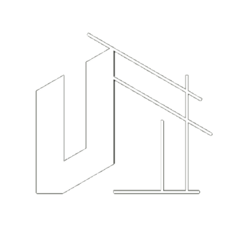

FROM HUMAN SCALE TO URBAN IMPACT
URBANC STUDIO
URBANC Studio is an architecture and interior design firm established in 2007 founded by Aelius Bhanuwasa. Built upon a family legacy in the property sector, the studio has maintained strong industry affiliations to this day. Based in Central Jakarta, the firm was officially incorporated in 2011, later expanding its scope in 2015 to include professional consultancy and urban development. Throughout its journey URBANC Studio has delivered various large-scale projects in collaboration with both government institutions and the private sector.
The studio specializes in Design & Build services across commercial, residential, and urban planning sectors, adopting an integrative approach tailored to meet diverse client needs. Founded by Aelius Bhanuwasa · Since 2007, the practice continues to push architectural excellence.
The studio specializes in Design & Build services across commercial, residential, and urban planning sectors, adopting an integrative approach tailored to meet diverse client needs. Founded by Aelius Bhanuwasa · Since 2007, the practice continues to push architectural excellence.
"WE REMAIN COMMITTED TO PRESENTING INNOVATIVE FUNCTIONAL AND SUSTAINABLE DESIGN SOLUTIONS"
DESIGN OVERVIEW
The Kachoo Office serves as a strategic typological response to Jakarta’s Sudirman corridor, utilizing a vertical stacking logic that seamlessly integrates Grade-A commercial functions with urban mobility. The design addresses the macro-urban context by activating the ground level as an inclusive Transit Oriented Development hub, while employing a tropical performance facade to mitigate solar heat gain on the East-West axes. By combining an adaptive workplace with a "humanized CBD" approach, the project evolves from a traditional office building into a high-performance vertical infrastructure that strengthens social and economic connectivity within Jakarta’s center of business.
X (Twitter)
@urbancstudio
Email
urbancstudio@office.co
Address
RP. Soeroso 40BC, Gondangdia, Menteng, Jakarta Pusat.
Telephone
+62 858 9998 0283
Instagram
@urbancstudio